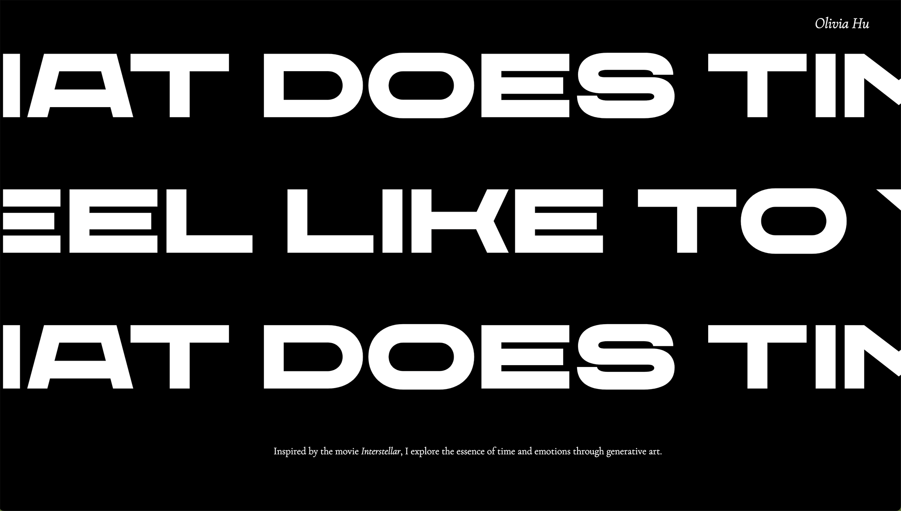
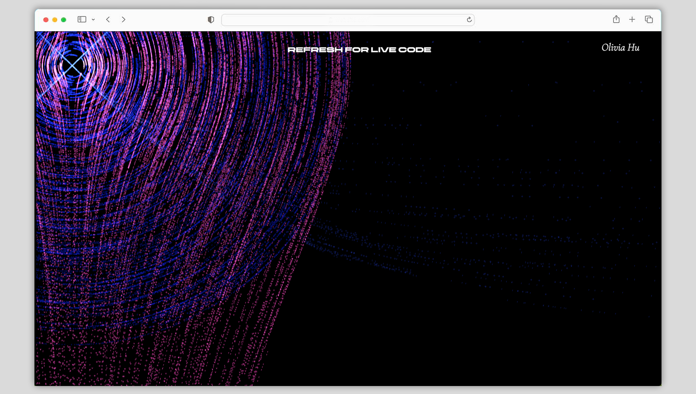
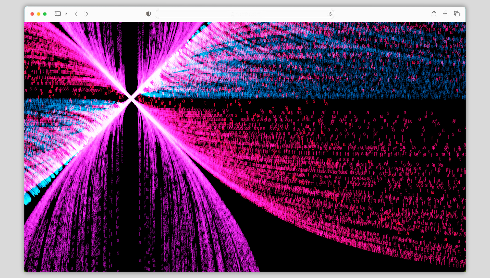
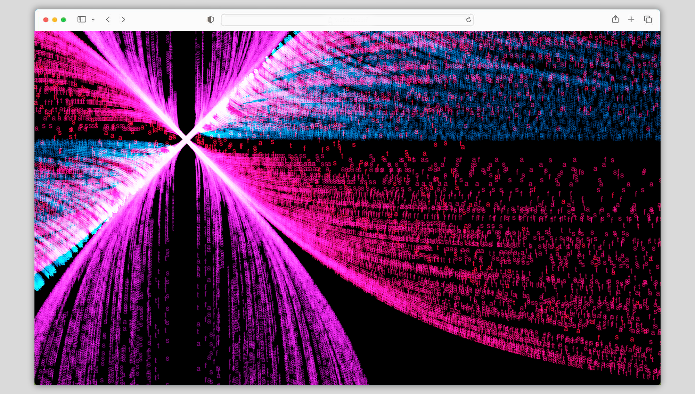

What Does Time Feel Like To You?
Drawing inspiration from the cinematic masterpiece Interstellar, I utilized p5.js to craft an immersive website that brings to life the concept of space and time through various dynamic outputs all stemming from a single, mesmerizing code. Visit site
  
